设计师需要了解的 调试技巧
Design by Paper
故事
设计师 MM：
- 这个字号改一下看看
- 背景颜色再淡一些吧 ？
- 对了，这个图片间距再调大一点吧？
程序员：。。。
设计的还原
从 PS 到 CSS
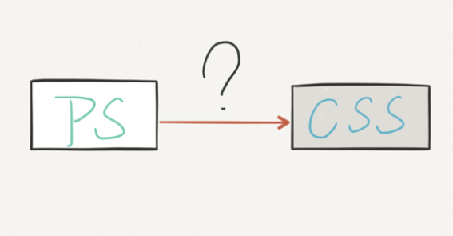Chrome 调试工具
打开方式
-
右键→审查元素
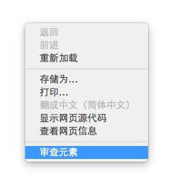
Chrome 调试工具
打开方式
- Windows/Linux: Ctrl+ Shift+ I
- Mac: ⌘+ ⌥+ I
- 或者： F12
Chrome 调试工具
所有演示使用最新的 Chrome Canary下载
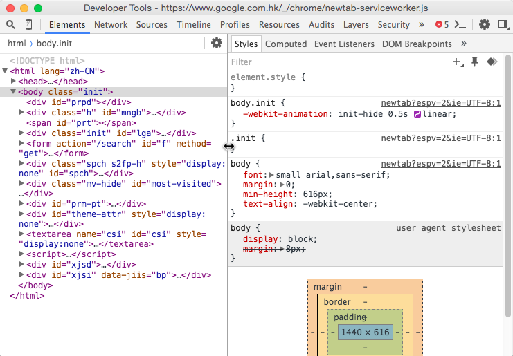Firefox 调试工具
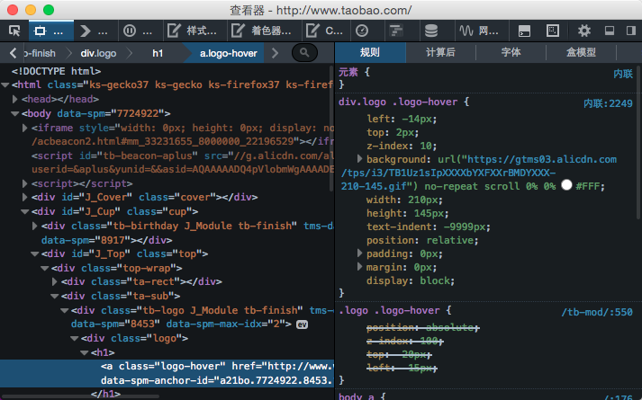PS 与 CSS
字体
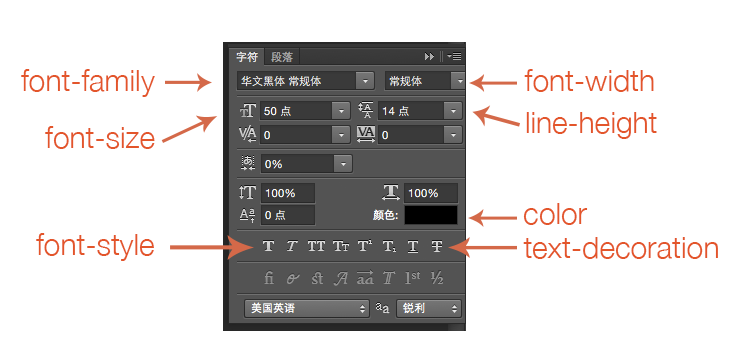PS 与 CSS
查看实际渲染字体
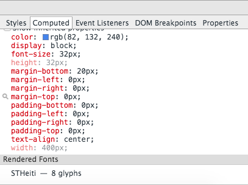 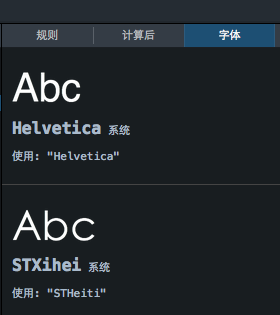PS 与 CSS
尺寸，间距
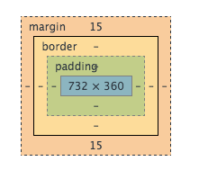PS 与 CSS
描边，背景，圆角
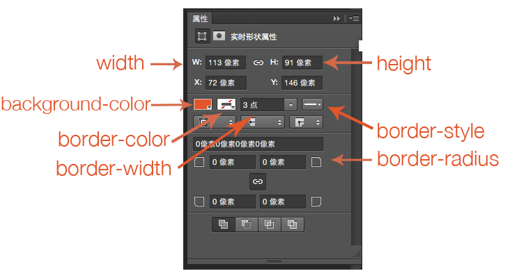
示例
点击修改数值试试效果
吓得我脸都变圆了
示例
吓得我脸都变绿了
开发者工具修改 CSS
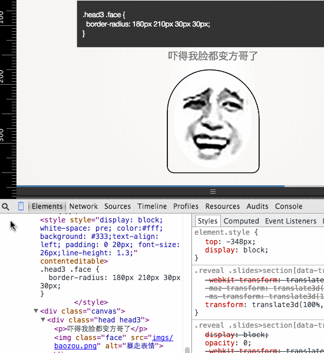示例
试试直接用开发者工具修改
吓得我脸都变方哥了
示例
吓得我都分身了
PS 与 CSS
颜色选择器
- 多种颜色模式可选
- 可以吸取页面上的颜色

响应式调试
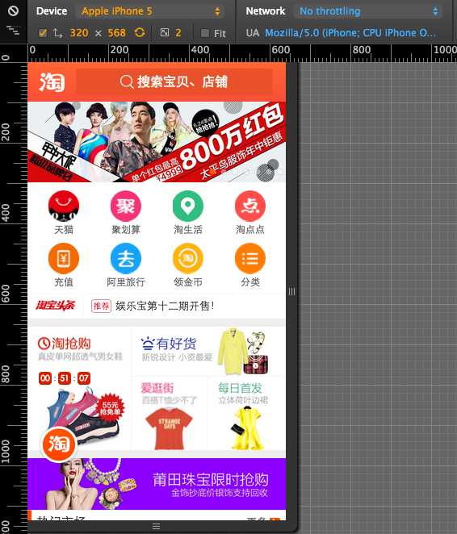响应式调试
XCode 自带的 iOS 模拟器
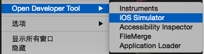
过渡效果调试
CSS 对应 transition 属性
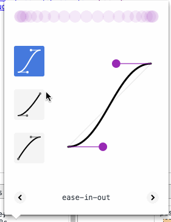动画调试
CSS 对应 animation 属性